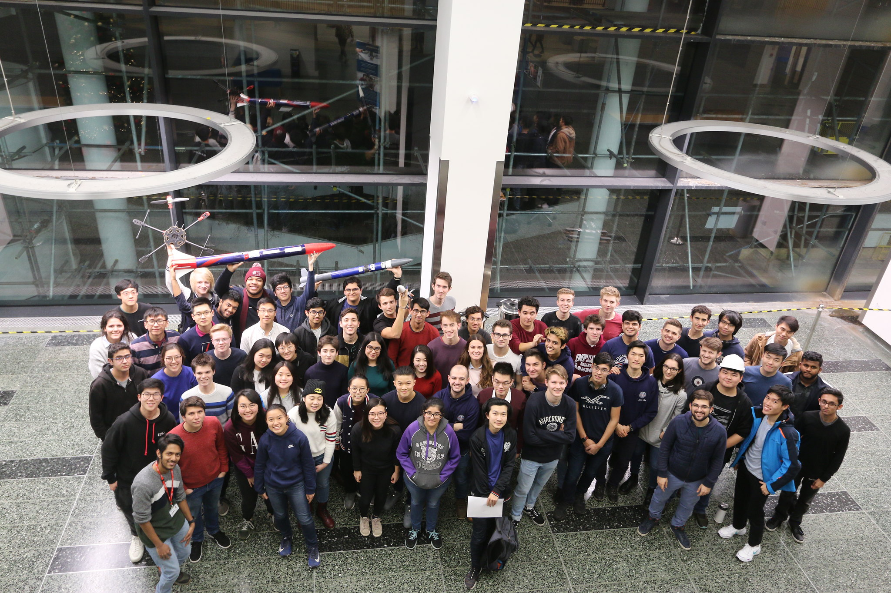
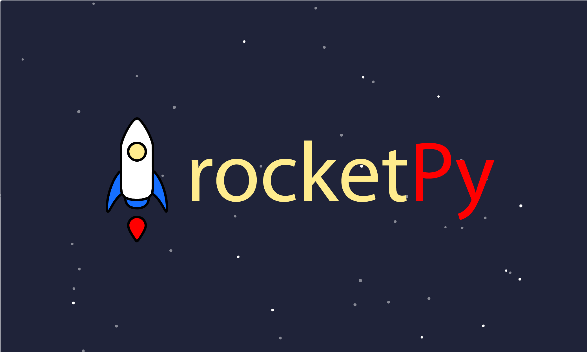

Projects
Mind The Gap
Mind The Gap is a smartphone app to aid with social distancing. It can measure the distance between devices over 2 meters away, and alert users if someone comes close.
Imperial College London Rocketry (ICLR)
Imperial College London Rocketry (ICLR) is a new aero department society that I founded with Will and Sena in my sophomore year. He and Sena built up the society during my junior year (when I was away on exchange) but I resumed with the project when I got back in my senior year. I was one of the co-leads with Will, Sena, and Shreeyam, and am in charge of the Systems and Integration team and the Simulations and Controls team.
We are building a scratch-built hybrid rocket using Paraffin and Nitrous Oxide. It is designed to carry a 8.8 lb (4 kg) payload to an altitude of 10,000 ft, as required by the Spaceport America Cup.
The project had to wind down due to Covid-19, but the new leads are continuing the project!
RocketPy
While openRocket is the standard hobbyist rocket design and analysis tool, its built in Java and has limitations when it comes to easily extending the software.
I have begun building a open-source model rocket simulator in Python, calling it rocketPy.
ELDER Satellite Design Project
As part of the Spring 2019 Space Systems Engineering capstone (16.83) at MIT, I designed a mission to Enceladus, Saturn.
Our advisor, Prof Dava Newman, gave us this very open-ended challenge (in fact we had to pick our destination too).
I designed our missions trajectory, and either sized or selected off-the-shelf spacecraft components.
Our design review slides are here, the spacecraft design teams final report is here and the trajectory report is here.